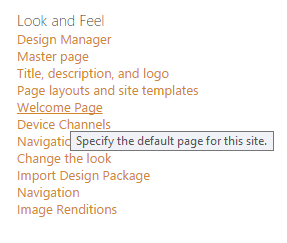
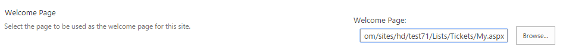

How to change home page¶
There are two ways to change homepage:
From ribbon¶
To change homepage, open the needed page in a browser. On the ribbon tab named ‘Page’ you will find a button ‘Make homepage’:

From site settings¶
If you want to set a custom homepage, you can change its URL in your site settings.
Navigate to settings using the icon in the navbar:

Then click on the “Welcome page” link:

On the opened page you can provide a new value for welcome page URL:
